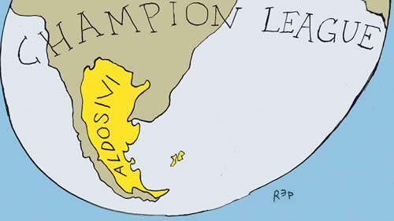

Real Chubut - Agencia de Noticias


Luces de alerta

La suba de la tasa de interés de Estados Unidos y la elevada volatilidad de las acciones en Wall Street alteraron el mercado financiero internacional. El viento de cola que ha alimentado de dólares a la economía argentina es más suave.
El gobierno nacional no pudo capturar ni un dólar en el mercado internacional en febrero pasado. Las grandes empresas tampoco y mucho menos las provincias. En este mes todavía ninguno de estos protagonistas del mercado de deuda en plazas del exterior tiene previsto tocar esa puerta. Como se sabe, el principal salvavidas del plan económico de la Segunda Alianza son los dólares de deuda. Se ha cerrado ese grifo abruptamente, aunque en el mercado estiman que será en forma transitoria. Lo cierto es que la inestabilidad de las cotizaciones bursátiles y la lenta pero persistente alza de la tasa de interés de Estados Unidos han cambiado el amable escenario de las finanzas internacionales que acompañaba a la economía argentina. Esta, además, ha encendido luces de alerta en el tablero de los financistas.
Chubut fue la primera que llamó la atención. El gobernador interino, Mariano Arcioni, afirmó que la provincia tiene que reestructurar la deuda en bonos por unos 700 millones de dólares, para luego corregirse y decir que lo que busca es refinanciarla. Lo primero es una declaración de default para el mercado financiero, y lo segundo es una operación habitual, aunque Arcioni reconoció que tienen problemas económicos y que le “está costando pagar la deuda”. Después fue el turno del gobernador de San Luis, Alberto Rodríguez Saá, que en un reportaje a este diario, el domingo pasado, afirmó que las provincias que firmaron el pacto fiscal hoy están casi todas en default y que su provincia, que no lo firmó, “está al borde del default”.
El mundo de las finanzas alteró la percepción de riesgo acerca de la economía argentina, teniendo en cuenta que hay 15 provincias que han colocado deuda en el mercado internacional. Son manifestaciones de las primeras grietas que comenzaron a abrirse en el impresionante ciclo de endeudamiento que inauguró el gobierno de Mauricio Macri, inédito por magnitud y velocidad. Son señales, como la reversión de la tendencia de la tasa de interés internacional, que analistas y economistas que no se reconocen oficialistas, con conmovedor voluntarismo, relativizan para destacar que el ministro de la Deuda, Luis Caputo, ya consiguió el 50 por ciento de las necesidades de financiamiento para este año.
Burbujas
Las crisis financieras o de deuda empiezan a enviar iniciales manifestaciones en eslabones más alejados del circuito central del dispositivo de especulación. Ya hubo varios indicios de que el viento de cola del que gozó el macrismo en sus primeros dos años empezó a cambiar. No tomar nota de esa reversión orienta hacia evaluaciones negadoras de un escenario que dejó de ser tan favorable. El factor principal, el detonante en un mundo de las finanzas más complejo para países endeudados, es la consolidación de la política de aumento de la tasa de interés de Estados Unidos.
De niveles de tasas de referencia de casi cero por ciento, herramienta que formó parte de la expansión monetaria para enfrentar la crisis de 2008, la Reserva Federal (banca central estadounidense) empezó a subirla hasta el 1,25 por ciento el año pasado, para proyectar un sendero de 2,0 por ciento en este año, 2,5 en el próximo y 3,0 por ciento en 2020. Analistas financieros especulan con que el cambio de conducción de la FED (Janet Yellen fue reemplazada por Jerome Powell) pueda llegar a acelerar ese proceso, probabilidad que quedó latente con las primeras exposiciones públicas del nuevo presidente de la banca central de Estados Unidos.
Tasas bajas y expansión monetaria para salir de la crisis de Wall Street de 2008 alimentó otro frenesí especulativo en el mercado de acciones estadounidense. Es una burbuja que hoy está en tensión. No es un ciclo que se desconozca o que deba sorprender. Dos destacados economistas dejaron enseñanzas esenciales para advertirlo. John Kenneth Galbraith estimó en Breve historia de la euforia financiera que la memoria financiera en la población, o sea el recuerdo del último crac que provocó quebrantos masivos, se debilita a los 10 años, facilitando la reedición de la fiebre especulativa con nuevos actores del mercado. En Manías, pánicos y cracs. Historia de las crisis financieras, Charles Kindleberger lo precisó al explicar que el exceso especulativo, que define como manía, y la reacción a esa desmesura en la forma de crisis, crac o pánico demuestra ser, si no inevitable, al menos, históricamente común.
Tasas
El dinero barato facilitado por tasas de interés muy bajas alimenta la fiesta especulativa. Cuando las tasas empiezan a subir dejan al descubierto los excesos. Economías periféricas y lanzadas a un ciclo de endeudamiento vertiginoso para cubrir el desequilibrio externo, como la argentina de Macri, quedan más expuestas, debilidad que se agudiza con la ola proteccionista liderada por Donald Trump en el comercio internacional, al restar ingresos de dólares por el lado de las exportaciones.
El año financiero comenzó con una señal contundente: ya no será tan fácil y barato conseguir dólares vía colocación de deuda en el mercado interno y externo para atender el déficit del sector externo. Esa situación ya la están enfrentando grandes empresas argentinas que habían planificado el desembarco en el mercado internacional para conseguir financiamiento.
Central Puerto y Corporación América (administradora de aeropuertos) realizaron colocaciones de acciones en Wall Street a precios bastante más bajos que los previstos en el plan original. La oferta inicial de Corporación América era de 19 a 23 dólares por acción, pero los inversores no convalidaron esos precios y la operación se cerró a 17 dólares. Lo mismo sucedió con Central Puerto, cuya oferta inicial era de 17,5 a 21,5 dólares por papel, para definir el corte en 16,5 dólares. Otras empresas, que aspiraban a absorber dólares del mercado, aprovechando que las finanzas globales estaban mimando al gobierno de Macri, decidieron postergar el lanzamiento (Molinos Cañuelas, Bioceres, Genneia) luego de la experiencia de Central Puerto y Corporación América.
El alza de la tasa de interés de referencia de la FED impulsa en ese mismo sentido a la tasa de los bonos de 10 años del Tesoro de Estados Unidos, que se está acercando al 3,0 por ciento anual. Esa tasa actúa de piso para la demanda que hacen los inversores internacionales para comprar deuda de países periféricos. Esto significa que los bonos argentinos tienen que rendir bastante más para seducir a financistas y, por lo tanto, debe pagar una tasa más elevada en emisiones nuevas. Mientras, los títulos que ya circulan por la plaza bursátil bajan de precios para brindar una renta implícita más abultada. Por eso los bonos argentinos de largo plazo han retrocedido en promedio el 10 por ciento en dólares en lo que va del año (los títulos con vencimiento en el 2037 y 2117). El saldo es que el costo del endeudamiento argentino (indicador riesgo país) subió casi 20 por ciento.
Bonos
Las puertas del financiamiento internacional, que estaban abiertas de par en par, lo que permitió que en dos años el gobierno nacional, provincias y empresas pudieran emitir en total deuda por unos 133 mil millones de dólares, según el relevamiento del Observatorio de Deuda de la UMET, se entornaron. Un reciente reporte de la firma Research for Traders advierte que las empresas tuvieron que conseguir financiamiento emitiendo bonos en el mercado local porque el internacional no respondía a esa oferta. Explica que es un fenómeno que no ocurría desde enero de 2016, cuando firmas argentinas no pudieron colocar bonos en los mercados del exterior debido a las medidas cautelares del Juez Griesa durante la batalla con los fondos buitre.
El informe detalla que en el primer bimestre del año hubo 17 emisiones de deuda de grandes empresas en la plaza local, que recaudaron el equivalente a 1300 millones de dólares (7500 millones en pesos y 115 millones en dólares). Esa suma fue cuatro veces más que en el mismo período de 2017, cuando el mercado elegido para captar fondos era el internacional. Hubo tres compañías (Genneia, AySA y MSU de la familia Uribelarrea) que pudieron adelantarse y captaron 1200 millones de dólares en el exterior a principios de año, para luego irrumpir la sequía cuando la suba de la tasa de los bonos de Estados Unidos provocó una fuerte volatilidad en los mercados bursátiles.
Febrero terminó sin una sola colocación de deuda en el exterior de empresas, provincias ni del gobierno nacional. Si ahora lo intentaran tendrían que contabilizar un costo adicional de 1,5 puntos porcentuales más en la tasa de interés, estima Research for Traders, que especula con que Telecom-Cablevisión (del Grupo Clarín) puede ser la corporación que reabra el mercado de crédito internacional para bonos argentinos en los próximos meses.
Gatillo
Mientras consigue un muy fuerte respaldo del presidente Macri ante las denuncias de ocultar en su declaración jurada haber sido dueño de firmas offshore dedicadas a comprar bonos argentinos, el ministro Caputo se dedica a llenar de papeles de deuda el mercado local porque el externo hoy está cerrado. Como señal de que su tarea ya no será tan sencilla, los inversores le dejaron un mensaje de desconfianza en la última mega emisión. Fue elevada la demanda por los bonos en pesos con vencimiento más cercano y fueron aceptados porque se ofertaron con la garantía de actualización por inflación más un plus (4 por ciento). La oferta por el papel a mediano plazo no alcanzó la meta oficial.
El objetivo era recaudar 60.000 millones de pesos, monto que Caputo no consiguió, al sumar 58.300 millones. Desde que comenzó el actual ciclo de endeudamiento, la demanda fue de dos a cuatro veces superior a la oferta de bonos. A mediados de febrero, apenas pudo recaudar los 700 millones previstos en Letras del Tesoro en dólares, y con los bonos en pesos no alcanzó el objetivo. Estos últimos están atados a la inflación a plazos de 2 y 5 años. El primero tendrá una cláusula gatillo –la misma que el gobierno niega a los gremios en la negociación paritaria– que pagará lo que resulte más alto de una tasa de interés mensual de 1,6 por ciento (21 por ciento anual) o un 4 por ciento anual por encima de la inflación (CER).
Cuando se describe una situación de tensión, en este caso del frente financiero, el más sensible de un programa económico que se sostiene casi exclusivamente con endeudamiento interno y externo, rápidamente aparecen voces adelantando el colapso y también analistas que buscan minimizar las dificultades. La cuestión relevante es saber que el viento de cola del mundo financiero internacional, que acompañó durante dos años al gobierno de Macri, ya no tiene la misma intensidad y que existen turbulencias en el comercio internacional. Sólo hay que tomar nota de ese cambio del escenario porque hace aún más vulnerable a la economía nacional.
Fuente: Pagina 12